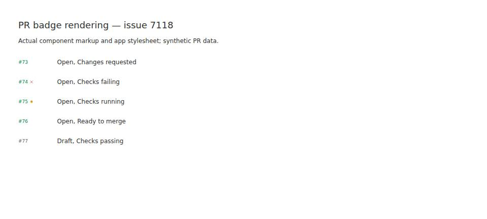
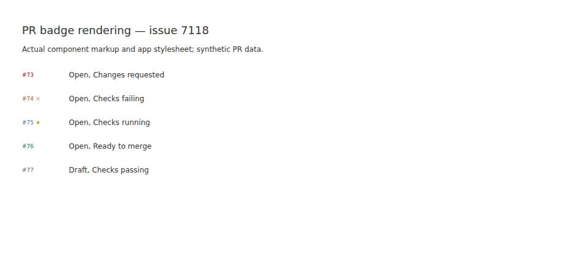

#7118 · PR number color ignores actionable signals
Verdict: REPRODUCED · Root-cause confidence: high · Reproduction label: confirmed-repro
1. TL;DR
The thread-row PR number uses the pull request lifecycle alone to select its text color. Every non-draft open PR therefore receives the green success class, even when available review or CI signals require action. The separate tooltip description and check glyph can disagree with that number because they consult richer signals. A regression against the actual badge renderer fails on two clean trusted checkouts, then passes after a contained UI-only fix.
2. Claims vs findings
| Claim | Finding | Evidence |
|---|---|---|
| Requested changes leave an open PR number green. | Verified | The rendered number is text-success-foreground while the actual status formatter returns “Open, Changes requested”. |
| Failed and running checks also leave the number green. | Verified | Both renderer assertions fail on the same green class; the browser capture shows the check glyphs separately. |
| The tooltip has access to richer status. | Verified at the component boundary | The source tooltip calls describePullRequestStatus; the harness displays that real formatter beside each badge. A live desktop hover was not tested. |
| Requested changes necessarily display a red X. | Not supported as a general claim | The glyph currently appears for conflicts or failing checks, not requested changes alone. The requested-changes/passing-checks example has no glyph. |
| The desktop/macOS environment is required. | Not required for this root cause | The same React component fails in Linux/jsdom. A native macOS desktop session was not exercised. |
3. Environment
Linux x86-64; Node 22.19.0; pnpm 9.15.0; repository-pinned Vitest 4.1.1. Two new temporary git worktrees at the recorded base were used: $WORK/source and $WORK/verify. Each received a frozen install. No user runtime database, GitHub account fixture, provider turn, authentication change, or new dependency was needed.
The repository build passed all 73 tasks after explicitly building the SDK runtime first. The initial cold build failed because a different plugin tried to consume an unbuilt SDK runtime; that setup failure is separate from the reproduction. A temporary Vite attempt on port 17718 was not used as evidence. Final images render actual server-rendered component HTML with the built app stylesheet in a BB Browser Automation headless browser; they are not screenshots of the full thread list.
4. Minimal reproduction
- Check out the trusted base in a clean directory.
- Install and build using the normal repository orchestration:
pnpm install --frozen-lockfile --prefer-offline pnpm exec turbo run build --filter=@get-bb/plugin-sdk pnpm exec turbo run build
Copy the full regression test into plugins/github-pr-status/ui/PullRequestRowMetadata.test.tsx. It installs the SDK test runtime only for host-provided rendering and restores worker globals after each case. PR data is synthetic; number rendering is the production component.
pnpm exec turbo run test --filter=bb-plugin-bb--github-pr-status -- ui/PullRequestRowMetadata.test.tsx
Expected: requested changes/conflicts are red, failed CI orange, running CI blue, ready-to-merge green, with draft/closed/merged lifecycle colors preserved. Actual before the fix:
AssertionError: expected 'text-success-foreground' to be 'text-destructive-text' AssertionError: expected 'text-success-foreground' to be 'text-warning-text' AssertionError: expected 'text-success-foreground' to be 'text-timeline-accent' Tests 6 failed | 4 passed (10)


Rendering harness source: copy to plugins/github-pr-status/repro-7118/render.tsx, then run with the built stylesheet and output paths:
CSS=$(find apps/app/dist/assets -maxdepth 1 -name 'index-*.css' | head -1) pnpm exec tsx --tsconfig plugins/github-pr-status/tsconfig.json plugins/github-pr-status/repro-7118/render.tsx "$CSS" badge.html capture.js
The resulting HTML contains real component markup and the real app CSS. No screenshot was hand-drawn or inferred from a test result.
5. Root cause
PullRequestBadge, lines 56–99, selects PULL_REQUEST_STATE_DISPLAY[pullRequest.state] and applies its class to the number except for drafts. The open lifecycle display always sets text-success-foreground.
const state = PULL_REQUEST_STATE_DISPLAY[pullRequest.state]; ... pullRequest.state === "draft" ? "text-subtle-foreground" : state.className
Meanwhile, the tooltip calls the richer status formatter. The existing attention assembler already distinguishes conflicts, check failures, requested changes, pending checks, and readiness. This is a presentation-selection defect, not missing GitHub data or a transport/schema defect.
6. Proposed and verified fix
Keep the lifecycle table unchanged because other surfaces legitimately use it. Resolve only the thread-row number class from the current lifecycle plus existing attention/check status. Preserve draft/merged/closed colors; use existing destructive, warning, and timeline-accent tokens for requested action, failed CI, and running CI respectively. Maintain actionable review/conflict precedence over pending checks. No server policy, public API, protocol, stored data, dependency, or packaging changes are necessary.
The local patch changes two files, with 178 additions and 7 deletions: 185 total changed text lines. The 10-case renderer regression passes. The full plugin suite passes 186 tests across 11 files; filtered typecheck and lint, formatting checks, and git diff --check pass. No binary change is included.
7. Linked PR metadata
GitHub cross-reference metadata identified PR #7119, which was closed and unmerged when inspected. No linked open PR was found before fix publication. Its branch was not checked out or executed, and its implementation is not used as reproduction evidence.
8. Related scope
The separate context-segment next-step description is not changed. Its existing tests remain passing. This report and patch concern the thread-row number color only.
9. Verification
The same agent repeated the reproduction directly in a second clean temporary worktree, $WORK/verify, detached at fa30b0a7dcdf745f7baf8e41721f754b7d3198fe. After a separate frozen install, the same copied regression test was run through the same Turbo command. Production code in that checkout remained unchanged. Result: 6 failed and 4 passed, with the same color assertion failures. This is a second clean run by the same agent, not independent verification. Initial harness errors from missing SDK icon runtime were corrected before both recorded final reproductions; the published logs contain the corrected runs.
No report correction was required after the second run. The final verdict concerns the actual renderer contract; live GitHub polling, desktop hover interaction, and native macOS rendering are not claimed.